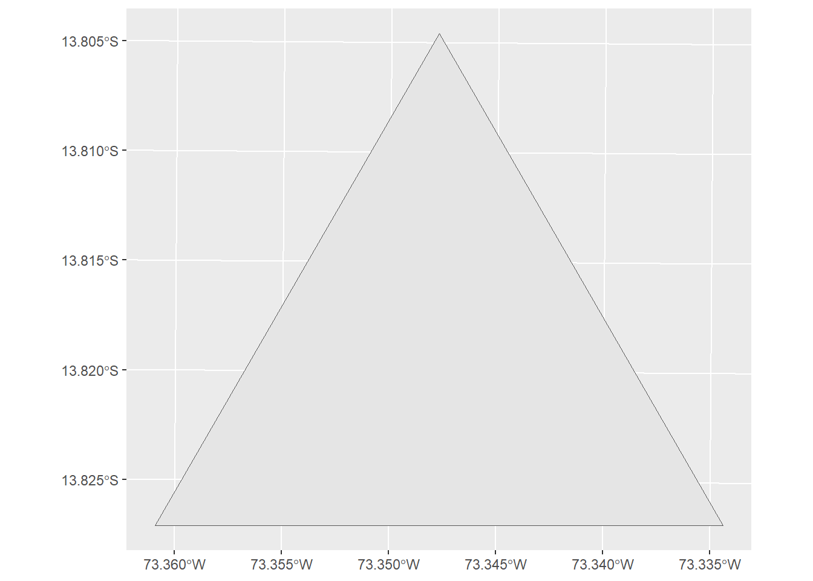
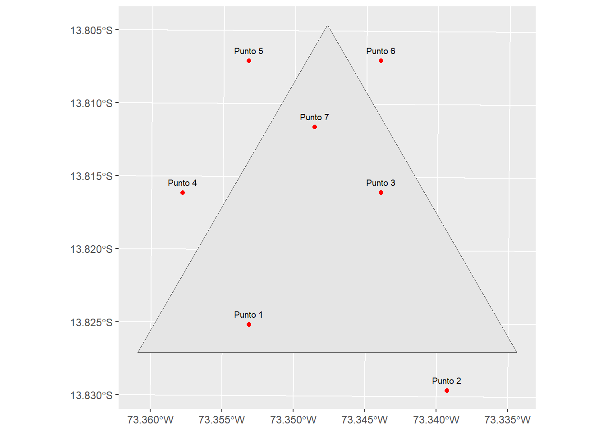
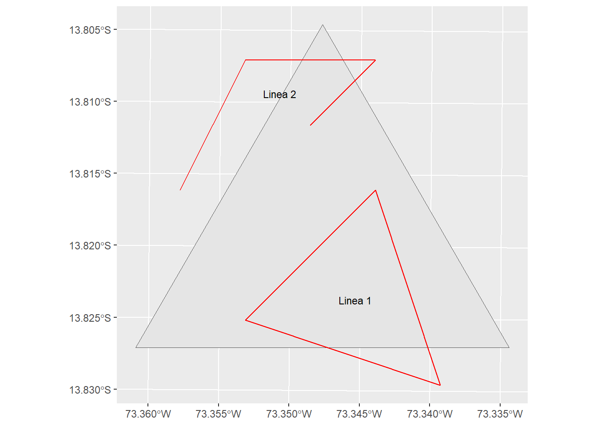
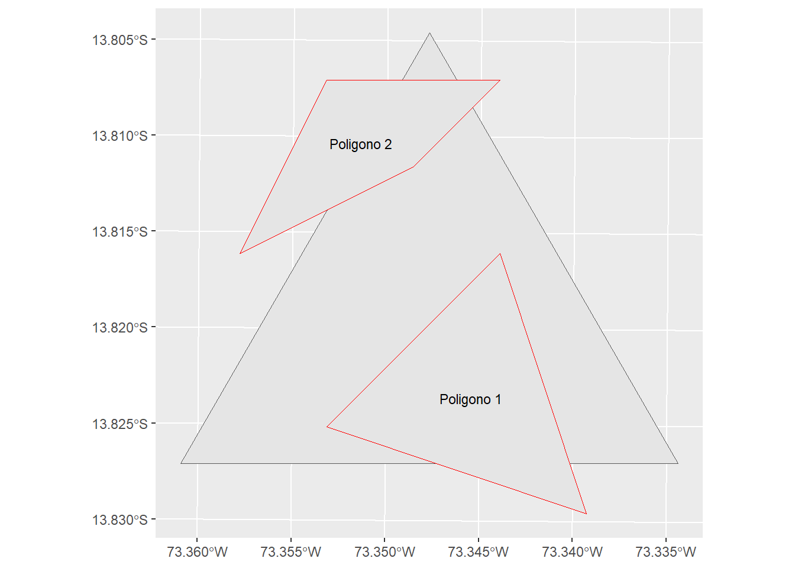

library(sf)
library(tidyverse) Creación de objetos SF

Según la figura superior para crear un objeto SF se realiza lo siguiente:
- Convertir coordendas a un objetos SFG
- Convertir el SFG a un objeto SFC
- Asignar un CRS al objeto SFC
- Crear un dataframe para los elementos del objeto SFC
- Crear un objeto SF con el SFC y el dataframe
Importación de librerias
Importación de un polígono de referencia
poligonos <- read_sf('DATA/Poligonos.shp')
triangulo <- poligonos[1,]ggplot() +
geom_sf(data = triangulo)
Las coordenadas de sus vértices son:
st_geometry(triangulo)[[1]][[1]] [,1] [,2]
[1,] 677159.6 8470790
[2,] 678593.3 8473273
[3,] 680027.0 8470790
[4,] 677159.6 84707901. Elemento Punto
a. Convertir coordendas a un objetos SFG
ST_POINT
# Coordenadas escogidas al azar
p1 <- c(678000, 8471000)
p2 <- c(679500, 8470500)
p3 <- c(679000, 8472000)
p4 <- c(677500, 8472000)
p5 <- c(678000, 8473000)
p6 <- c(679000, 8473000)
p7 <- c(678500, 8472500)
# Conversion a objetos SFG
p1_sfg <- st_point(p1)
p2_sfg <- st_point(p2)
p3_sfg <- st_point(p3)
p4_sfg <- st_point(p4)
p5_sfg <- st_point(p5)
p6_sfg <- st_point(p6)
p7_sfg <- st_point(p7)
p3_sfgclass(p3_sfg)[1] "XY" "POINT" "sfg" b. Convertir el SFG a un objeto SFC
ST_SFC
ptos_sfc <- st_sfc(p1_sfg, p2_sfg, p3_sfg, p4_sfg, p5_sfg, p6_sfg, p7_sfg)
ptos_sfcGeometry set for 7 features
Geometry type: POINT
Dimension: XY
Bounding box: xmin: 677500 ymin: 8470500 xmax: 679500 ymax: 8473000
CRS: NA
First 5 geometries:class(ptos_sfc)[1] "sfc_POINT" "sfc" c. Asignar un CRS al objeto SFC
ST_SET_CRS
ptos_sfc <- st_set_crs(ptos_sfc, "EPSG:32718")
ptos_sfcGeometry set for 7 features
Geometry type: POINT
Dimension: XY
Bounding box: xmin: 677500 ymin: 8470500 xmax: 679500 ymax: 8473000
Projected CRS: WGS 84 / UTM zone 18S
First 5 geometries:class(ptos_sfc)[1] "sfc_POINT" "sfc" d. Crear un dataframe para los elementos del objeto SFC
ptos_df <- data.frame(Id = c(1, 2, 3, 4, 5, 6, 7),
Objeto = c("Punto 1", "Punto 2", "Punto 3", "Punto 4",
"Punto 5", "Punto 6", "Punto 7"))
ptos_df Id Objeto
1 1 Punto 1
2 2 Punto 2
3 3 Punto 3
4 4 Punto 4
5 5 Punto 5
6 6 Punto 6
7 7 Punto 7class(ptos_df)[1] "data.frame"e. Crear un objeto SF con el SFC y el dataframe
ptos_sf <- st_sf(ptos_df, ptos_sfc)
ptos_sfSimple feature collection with 7 features and 2 fields
Geometry type: POINT
Dimension: XY
Bounding box: xmin: 677500 ymin: 8470500 xmax: 679500 ymax: 8473000
Projected CRS: WGS 84 / UTM zone 18S
Id Objeto ptos_sfc
1 1 Punto 1 POINT (678000 8471000)
2 2 Punto 2 POINT (679500 8470500)
3 3 Punto 3 POINT (679000 8472000)
4 4 Punto 4 POINT (677500 8472000)
5 5 Punto 5 POINT (678000 8473000)
6 6 Punto 6 POINT (679000 8473000)
7 7 Punto 7 POINT (678500 8472500)class(ptos_sf)[1] "sf" "data.frame"Gráfica
ggplot() +
geom_sf(data = triangulo) +
geom_sf(data = ptos_sf, color = "red") +
geom_text(data = ptos_df,
aes(x = c(st_coordinates(ptos_sf)[,1]),
y = c(st_coordinates(ptos_sf)[,2])+80,
label = Objeto),
size = 2.5) +
theme(axis.title = element_blank())
2. Elemento Línea
a. Convertir coordendas a un objetos SFG
ST_LINE
# Coordenadas escogidas al azar
p1 <- c(678000, 8471000)
p2 <- c(679500, 8470500)
p3 <- c(679000, 8472000)
p4 <- c(677500, 8472000)
p5 <- c(678000, 8473000)
p6 <- c(679000, 8473000)
p7 <- c(678500, 8472500)
# Conversion a objetos SFG
line1_sfg <- st_linestring(rbind(p1, p2, p3, p1))
line2_sfg <- st_linestring(rbind(p4, p5, p6, p7))
line1_sfgclass(line1_sfg)[1] "XY" "LINESTRING" "sfg" b. Convertir el SFG a un objeto SFC
ST_SFC
line_sfc <- st_sfc(line1_sfg, line2_sfg)
line_sfcGeometry set for 2 features
Geometry type: LINESTRING
Dimension: XY
Bounding box: xmin: 677500 ymin: 8470500 xmax: 679500 ymax: 8473000
CRS: NAclass(line_sfc)[1] "sfc_LINESTRING" "sfc" c. Asignar un CRS al objeto SFC
ST_SET_CRS
line_sfc <- st_set_crs(line_sfc, "EPSG:32718")
line_sfcGeometry set for 2 features
Geometry type: LINESTRING
Dimension: XY
Bounding box: xmin: 677500 ymin: 8470500 xmax: 679500 ymax: 8473000
Projected CRS: WGS 84 / UTM zone 18Sclass(line_sfc)[1] "sfc_LINESTRING" "sfc" d. Crear un dataframe para los elementos del objeto SFC
line_df <- data.frame(Id = c(1, 2),
Objeto = c("Linea 1", "Linea 2"))
line_df Id Objeto
1 1 Linea 1
2 2 Linea 2class(line_df)[1] "data.frame"e. Crear un objeto SF con el SFC y el dataframe
line_sf <- st_sf(line_df, line_sfc)
line_sfSimple feature collection with 2 features and 2 fields
Geometry type: LINESTRING
Dimension: XY
Bounding box: xmin: 677500 ymin: 8470500 xmax: 679500 ymax: 8473000
Projected CRS: WGS 84 / UTM zone 18S
Id Objeto line_sfc
1 1 Linea 1 LINESTRING (678000 8471000,...
2 2 Linea 2 LINESTRING (677500 8472000,...class(line_sf)[1] "sf" "data.frame"Gráfica
ggplot() +
geom_sf(data = triangulo) +
geom_sf(data = line_sf, color = "red") +
geom_text(data = line_df,
aes(x = st_coordinates(st_centroid(line_sf))[,1],
y = st_coordinates(st_centroid(line_sf))[,2],
label = Objeto),
size = 3) +
theme(axis.title = element_blank())
3. Elemento Polígono
a. Convertir coordendas a un objetos SFG
ST_LINE
# Coordenadas escogidas al azar
p1 <- c(678000, 8471000)
p2 <- c(679500, 8470500)
p3 <- c(679000, 8472000)
p4 <- c(677500, 8472000)
p5 <- c(678000, 8473000)
p6 <- c(679000, 8473000)
p7 <- c(678500, 8472500)
# Conversion a objetos SFG
poly1 <- st_polygon(list(rbind(p1, p2, p3, p1)))
poly2 <- st_polygon(list(rbind(p4, p5, p6, p7, p4)))
poly_sfg <- st_multipolygon(list(poly1, poly2))
poly_sfgclass(poly_sfg)[1] "XY" "MULTIPOLYGON" "sfg" b. Convertir el SFG a un objeto SFC
ST_SFC
poly_sfc <- st_sfc(poly1, poly2)
poly_sfcGeometry set for 2 features
Geometry type: POLYGON
Dimension: XY
Bounding box: xmin: 677500 ymin: 8470500 xmax: 679500 ymax: 8473000
CRS: NAclass(poly_sfc)[1] "sfc_POLYGON" "sfc" c. Asignar un CRS al objeto SFC
ST_SET_CRS
poly_sfc <- st_set_crs(poly_sfc, "EPSG:32718")
poly_sfcGeometry set for 2 features
Geometry type: POLYGON
Dimension: XY
Bounding box: xmin: 677500 ymin: 8470500 xmax: 679500 ymax: 8473000
Projected CRS: WGS 84 / UTM zone 18Sclass(poly_sfc)[1] "sfc_POLYGON" "sfc" d. Crear un dataframe para los elementos del objeto SFC
poly_df <- data.frame(Id = c(1, 2),
Objeto = c("Poligono 1", "Poligono 2"))
poly_df Id Objeto
1 1 Poligono 1
2 2 Poligono 2class(poly_df)[1] "data.frame"e. Crear un objeto SF con el SFC y el dataframe
poly_sf <- st_sf(poly_df, poly_sfc)
poly_sfSimple feature collection with 2 features and 2 fields
Geometry type: POLYGON
Dimension: XY
Bounding box: xmin: 677500 ymin: 8470500 xmax: 679500 ymax: 8473000
Projected CRS: WGS 84 / UTM zone 18S
Id Objeto poly_sfc
1 1 Poligono 1 POLYGON ((678000 8471000, 6...
2 2 Poligono 2 POLYGON ((677500 8472000, 6...class(poly_df)[1] "data.frame"Gráfica
ggplot() +
geom_sf(data = triangulo) +
geom_sf(data = poly_sf, color = "red") +
geom_text(data = poly_df,
aes(x = st_coordinates(st_centroid(poly_sf))[,1],
y = st_coordinates(st_centroid(poly_sf))[,2],
label = Objeto),
size = 3) +
theme(axis.title = element_blank())